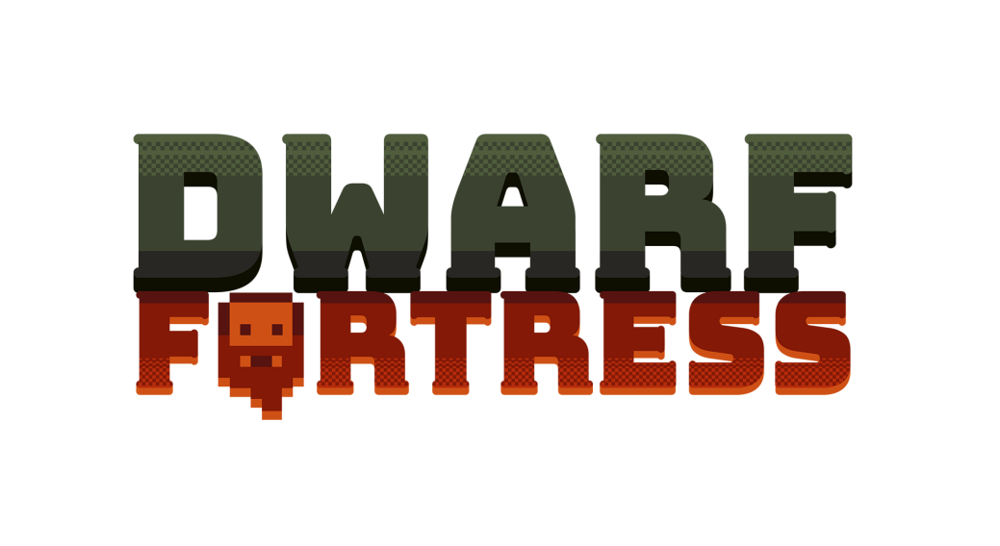
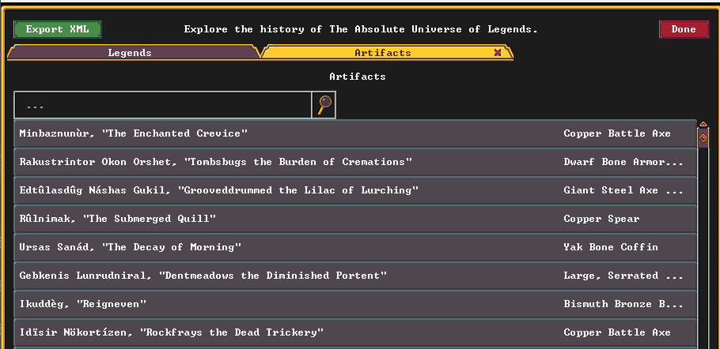

JuegaManiacos
RESEÑAS
JuegaManiacos
RESEÑAS

XENOBLADE CHRONICLES X
Sebastian Vargas
21/04/2026
Xenoblade Chronicles X es una obra maestra de la exploración en mundo abierto. Adéntrate en el vasto y hostil planeta Mira, pilota impresionantes mechas llamados Skells y lucha por la supervivencia de la humanidad en este monumental JRPG de ciencia ficción.
Diciembre 2015
Monolith Soft
JRPG, Mundo Abierto, Ciencia Ficción, Acción
Cuando la Tierra es destruida en un brutal fuego cruzado alienígena, los restos de la humanidad escapan a las estrellas. Nuestra nave termina estrellándose en Mira, un planeta inmenso, hermoso y letal. Este es el épico punto de partida de Xenoblade Chronicles X.
Lo que realmente define a este título de Monolith Soft no es su historia principal —que a veces queda en un segundo plano—, sino su incomparable mundo abierto. Mira está dividido en cinco continentes gigantescos, cada uno con su propia flora, fauna y ecosistema espectacularmente diseñado. La sensación de escala y verticalidad es asombrosa, especialmente cuando, tras decenas de horas de juego a pie, finalmente consigues tu licencia para pilotar un Skell. El juego cambia por completo en ese momento: pasas de correr por las praderas a transformarte en vehículo, surcar los cielos y enfrentarte cara a cara con monstruos del tamaño de montañas que antes te obligaban a huir.
El sistema de combate evoluciona respecto al primer Xenoblade, volviéndose más rápido, dinámico y profundo, con un fuerte énfasis en el cambio de clases y el posicionamiento. Todo esto viene acompañado de una banda sonora única compuesta por el talentoso Hiroyuki Sawano, que mezcla rock, electrónica y temas vocales muy peculiares que le dan una identidad inconfundible al título.
En conclusión, estamos ante un triunfo absoluto del diseño de mundos. Aunque la interfaz puede resultar abrumadora al principio, la experiencia de perderse en Mira, descubrir sus secretos y ayudar a reconstruir la ciudad de Nueva Los Ángeles es un viaje que ningún fan de los RPG de acción debería perderse.
9.5

DWARF FORTRESS
Loïc Fontenla
20/04/2026
Dwarf fortress intenta ser un simulador de todo, y aún le faltan cosas. Pero lo que ya hay es más que suficiente para dar cientos de horas de juego si eres capaz de asumir el desafío
2006.
Bay12 Games
Gestión, simulación
Hablemos de un juego ambicioso, de un juego que creó una persona hace veinte años y en el que ha estado trabajando solo en compañía de su hermano durante la mayor parte de ese tiempo. hablemos de un juego de fantasía, pero poco.
Hay elfos, hay goblins, hay humanos y, por supuesto, hay enanos.
Hablemos de Dwarf Fortress.
Es difícil definir este juego. ¿Qué es? parece una pregunta bastante sencilla, pero pronto se complica. Podríamos decir que es un juego de gestión, y sería cierto.
También podríamos compararlo con los sims, y no faltaría razón. Hay una línea clara que lo conecta, o al menos uno de sus modos, con el roguelike original, Rogue.
Y también sirve de simulador de mundo, de creador de historias, de momentos inolvidables, de proyectos ambiciosos, y de grandes fracasos y fracasos más normales.
 Todo empieza con un mundo. Pero Dwarf Fortress no ofrece un mundo común a todos sus jugadores. Ni siquiera el mismo mundo para dos personas. Lo primero que tienes que hacer al iniciar el juego es crear un mundo, determinando sus parámetros.
Con opciones sencillas sólo eliges el tamaño, el tiempo de historia a desarrollar, la cantidad de fauna en el mundo, la aparición de minerales, y poco más salvo sentarte a ver cómo evoluciona.
Con los parámetros detallados nos aparecen opciones como elegir la elevación mínima y la máxima, vulcanidad, nivel del mar, climatología, y muchas, muchas opciones más que harán que alguien poco versado en composición planetaria y biosferas se sienta perdido.
Pero, eventualmente, se llega al mismo punto desde ambas opciones: un mundo nuevo, único y listo para ser explorado.
Todo empieza con un mundo. Pero Dwarf Fortress no ofrece un mundo común a todos sus jugadores. Ni siquiera el mismo mundo para dos personas. Lo primero que tienes que hacer al iniciar el juego es crear un mundo, determinando sus parámetros.
Con opciones sencillas sólo eliges el tamaño, el tiempo de historia a desarrollar, la cantidad de fauna en el mundo, la aparición de minerales, y poco más salvo sentarte a ver cómo evoluciona.
Con los parámetros detallados nos aparecen opciones como elegir la elevación mínima y la máxima, vulcanidad, nivel del mar, climatología, y muchas, muchas opciones más que harán que alguien poco versado en composición planetaria y biosferas se sienta perdido.
Pero, eventualmente, se llega al mismo punto desde ambas opciones: un mundo nuevo, único y listo para ser explorado.
Aquí tenemos tres formas de experimentar el mundo. La más sencilla es el modo leyendas, que no es más que un registro histórico de todo lo que se ha generado en el tiempo de historia solicitado.
Es en realidad una enciclopedia que abarcará todas las civilizaciones, todo ser vivo destacable, artefactos, escritos, deidades... Uno se puede pasar horas aquí, leyendo las vidas de las criaturas y sus aventuras,
como un historiador descubriendo la biblioteca de una época histórica perdida y de civilizaciones que no existen ya. El juego tiene tanto nivel de detalle que incluso da una descripción de cada uno de los textos que se han generado en el mundo.

El modo aventura es también bastante sencillo de explicar, aunque no de jugar. Antes se comparó con Rogue, y no es del todo falso, pero se queda corto. En Rogue eres un aventurero en una mazmorra, pero en Dwarf Fortress empiezas creando un personaje, eligiendo con todo lujo de detalles y opciones su equipo, y luego en qué parte del mundo aparecerá, listo para... bueno, en realidad, para lo que el jugador desee. No hay un gran objetivo a perseguir, aunque el juego si da un paso a paso a modo de tutorial para encontrar alguien que te de una misión y como cumplirla. Pero al final es decisión de quien juega qué es lo que quiere hacer en el mundo. ¿Salvar ciudades? Sin problema. ¿Asentarse? Se puede. ¿Derrotar a los dioses? Bueno, será difícil, pero adelante. Sólo hay que recordar que eres un ser vivo y, si deseas seguir siéndolo, deberás comer, beber, dormir, y dormir en un lugar seguro, o criaturas hostiles cambiarán tu estado a "muerto". Y por último está el modo fortaleza. Este fue el modo original y es el más popular por muchos motivos. Aquí empiezas eligiendo un lugar en el que asentarte y aparecerás con un grupo de siete enanos (¿referencias? ¿qué referencias?),
un vagón de carga, y un terreno inmaculado que modificar rápidamente. El objetivo realmente es sobrevivir. Es importante aquí mencionar que no hay una condición de victoria, sólo hay muchas, muchas condiciones de derrota.
Es muy fácil perder una fortaleza: falta de bebida, asedio, ataque de una bestia olvidada, descontento, falta de comida... Como dice la comunidad "Perder es divertido". y realmente lo es, porque una victoria,
una fortaleza que permanece estática e inalterada al paso del tiempo, puede terminar siendo aburrido; pero siempre se recuerda esa derrota en la que un enano enloqueció y acabó en solitario con toda la fortaleza,
o cuando se tiró de la palanca equivocada y los campos de plantas se convirtieron en campos de magma, o cuando descubriste por accidente las Cosas Divertidas Ocultas. Son recuerdos y, sobre todo, son experiencias.
Y por último está el modo fortaleza. Este fue el modo original y es el más popular por muchos motivos. Aquí empiezas eligiendo un lugar en el que asentarte y aparecerás con un grupo de siete enanos (¿referencias? ¿qué referencias?),
un vagón de carga, y un terreno inmaculado que modificar rápidamente. El objetivo realmente es sobrevivir. Es importante aquí mencionar que no hay una condición de victoria, sólo hay muchas, muchas condiciones de derrota.
Es muy fácil perder una fortaleza: falta de bebida, asedio, ataque de una bestia olvidada, descontento, falta de comida... Como dice la comunidad "Perder es divertido". y realmente lo es, porque una victoria,
una fortaleza que permanece estática e inalterada al paso del tiempo, puede terminar siendo aburrido; pero siempre se recuerda esa derrota en la que un enano enloqueció y acabó en solitario con toda la fortaleza,
o cuando se tiró de la palanca equivocada y los campos de plantas se convirtieron en campos de magma, o cuando descubriste por accidente las Cosas Divertidas Ocultas. Son recuerdos y, sobre todo, son experiencias. Hablando de experiencias, ¿Cómo es controlar a toda una fortaleza de enanos? Bueno, pues en realidad es algo que no se llega a saber. El control en Dwarf Fortress es algo nebuloso. Tú les dirás dónde tienen que cavar, o qué tienen que construir,
pero son los enanos los que, según sus tareas permitidas y su estado de ánimo, decidirán cuándo hacerlo. Hay herramientas de prioridades para tareas, y formas de automatizar procesos,
pero cuando todos tus mineros deciden que tienen que comer/beber/dormir en ese mismo momento, pues el cavar esa pared que puede ser la diferencia entre la supervivencia de la fortaleza o su fin ya puede esperar.
Hablando de experiencias, ¿Cómo es controlar a toda una fortaleza de enanos? Bueno, pues en realidad es algo que no se llega a saber. El control en Dwarf Fortress es algo nebuloso. Tú les dirás dónde tienen que cavar, o qué tienen que construir,
pero son los enanos los que, según sus tareas permitidas y su estado de ánimo, decidirán cuándo hacerlo. Hay herramientas de prioridades para tareas, y formas de automatizar procesos,
pero cuando todos tus mineros deciden que tienen que comer/beber/dormir en ese mismo momento, pues el cavar esa pared que puede ser la diferencia entre la supervivencia de la fortaleza o su fin ya puede esperar.Y ese es el detalle importante de Dwarf Fortress: tienes que aprender tu lugar. No eres uno de los personajes, no tienes control directo sobre sus acciones. Tampoco eres una deidad cuyos designios son incuestionables. Tu solicitas, sugieres, y los enanos actuarán por su propia voluntad.
El juego aún esta en fase alfa, y de hecho tiene aproximadamente la mitad de mecánicas centrales que el desarrollador quiere implementar. Todavía queda mucho por ver, aunque se tardarán años en llegar ahí. Y eso puede plantearnos una pregunta: ¿Hay suficiente juego para jugar? Y la respuesta es sí, sin duda lo hay. Y hay motivos para volver una y otra vez.
9